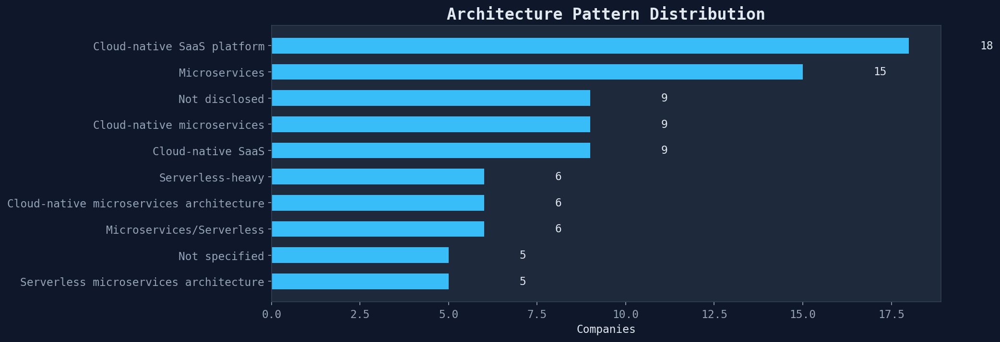
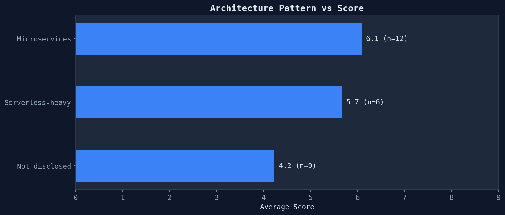
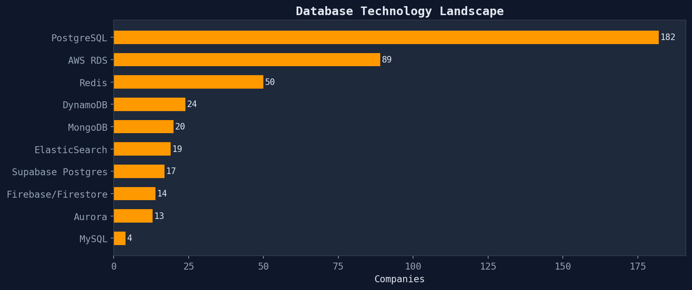

Monolith, microservices, serverless — what patterns dominate and which score highest
How companies structure their applications reveals their engineering maturity and scaling strategy.

| Pattern | Companies | Share |
|---|---|---|
| Cloud-native SaaS platform | 18 | 3.7% |
| Microservices | 15 | 3.1% |
| Not disclosed | 9 | 1.9% |
| Cloud-native microservices | 9 | 1.9% |
| Cloud-native SaaS | 9 | 1.9% |
| Serverless-heavy | 6 | 1.2% |
| Cloud-native microservices architecture | 6 | 1.2% |
| Microservices/Serverless | 6 | 1.2% |
Architecture pattern correlates with tech DD score — more sophisticated patterns tend to score higher.

PostgreSQL dominates, often via managed services (Supabase, AWS RDS, Neon).

Generated from architecture patterns module · 485 SOC 2 compliance reports · 2026-03-24